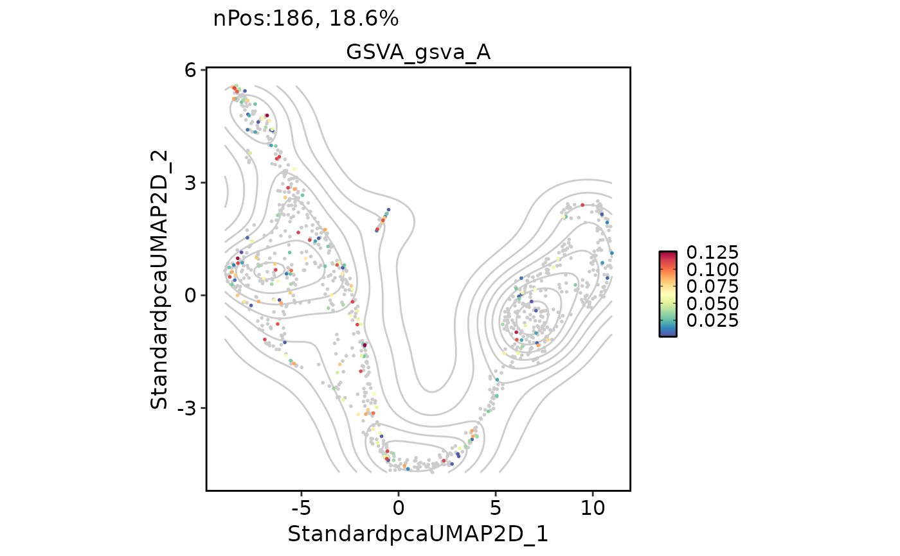
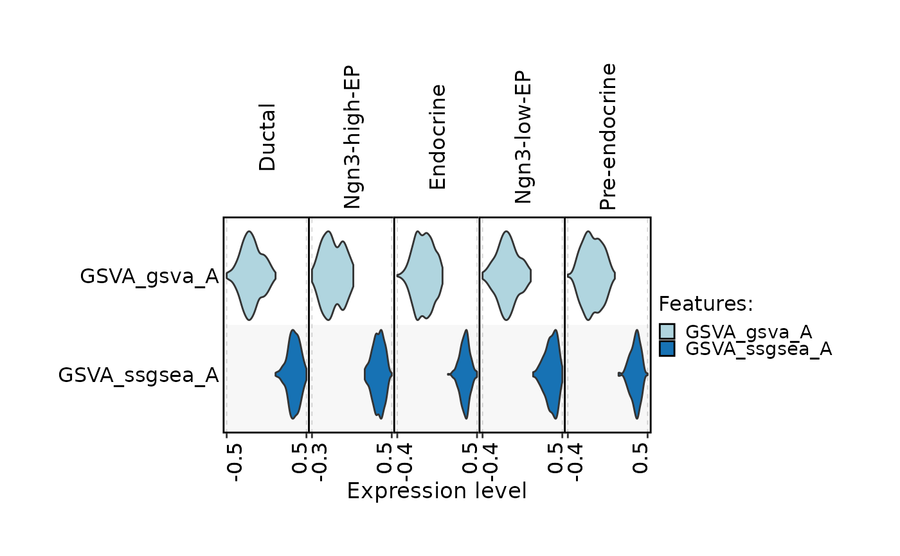
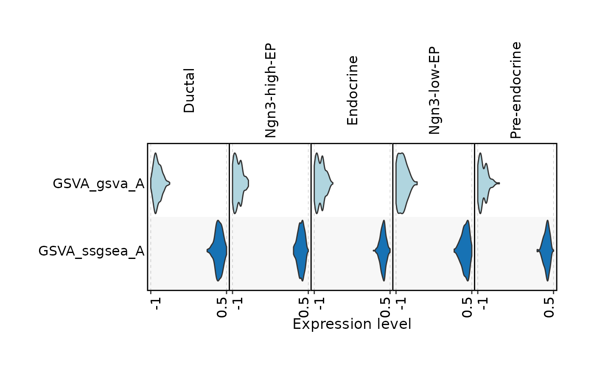

Perform Gene Set Variation Analysis (GSVA)
Usage
RunGSVA(
srt = NULL,
assay = NULL,
group.by = NULL,
layer = "data",
assay_name = "GSVA",
new_assay = TRUE,
store_metadata = NULL,
db = "GO_BP",
species = "Homo_sapiens",
IDtype = "symbol",
db_update = FALSE,
db_version = "latest",
db_combine = FALSE,
convert_species = TRUE,
Ensembl_version = NULL,
mirror = NULL,
features = NULL,
TERM2GENE = NULL,
TERM2NAME = NULL,
minGSSize = 10,
maxGSSize = 500,
unlimited_db = c("Chromosome", "GeneType", "TF", "Enzyme", "CSPA"),
method = c("gsva", "ssgsea", "zscore", "plage"),
backend = c("cpp", "r"),
cpp_chunk_size = NULL,
kcdf = c("Gaussian", "Poisson"),
abs.ranking = FALSE,
min.sz = 10,
max.sz = Inf,
mx.diff = TRUE,
tau = 1,
ssgsea.norm = TRUE,
verbose = TRUE
)Arguments
- srt
A
Seuratobject orSummarizedExperimentobject containing the results of differential expression analysis (RunDEtest()). If specified, the genes and groups will be extracted from the object automatically. If not specified, thegeneIDandgeneID_groupsarguments must be provided.- assay
Which assay to use. If
NULL, the default assay of the Seurat object will be used. When the object also containsChromatinAssay, the default assay and additionalChromatinAssaywill be preprocessed sequentially.- group.by
Name of metadata column to group cells by for averaging expression. If provided, expression will be averaged within each group before GSVA analysis (cell-type level). If
NULL, GSVA is performed on each cell individually (single-cell level).- layer
Data layer to use when
group.by = NULL. Usually"data"for normalized or"counts"for count matrix. Default is"data".- assay_name
Name of the assay to store GSVA scores when
group.by = NULLandnew_assay = TRUE. Default is"GSVA".- new_assay
Whether to create a new assay for GSVA scores when
group.by = NULL. Default isTRUE.- store_metadata
Whether to also store single-cell GSVA scores in
meta.data. WhenNULL, customfeaturesorTERM2GENEinput is stored inmeta.databy default, while database-derived results stay assay-only whennew_assay = TRUE.- db
A character vector specifying the annotation sources to be included in the gene annotation databases. Can be one or more of
"GO", "GO_BP", "GO_CC", "GO_MF", "KEGG", "WikiPathway", "Reactome", "CORUM", "MP", "DO", "HPO", "PFAM", "CSPA", "Surfaceome", "SPRomeDB", "VerSeDa", "TFLink", "hTFtarget", "TRRUST", "JASPAR", "ENCODE", "MSigDB", "CellTalk", "CellChat", "Chromosome", "GeneType", "Enzyme", "TF", "CytoTRACE2". Note:"CytoTRACE2"is species-independent and downloads pre-trained model data required by RunCytoTRACE.- species
A character vector specifying the species for which the gene annotation databases should be prepared. Can be
"Homo_sapiens"or"Mus_musculus".- IDtype
A character vector specifying the type of gene IDs in the
srtobject orgeneIDargument. This argument is used to convert the gene IDs to a different type ifIDtypeis different fromresult_IDtype.- db_update
Whether the gene annotation databases should be forcefully updated. If set to FALSE, the function will attempt to load the cached databases instead. Default is
FALSE.- db_version
A character vector specifying the version of the gene annotation databases to be retrieved. Default is
"latest".- db_combine
Whether to combine multiple databases into one. If
TRUE, all database specified bydbwill be combined as one named "Combined".- convert_species
Whether to use a species-converted database when the annotation is missing for the specified species. Default is
TRUE.- Ensembl_version
An integer specifying the Ensembl version. Default is
NULL. IfNULL, the latest version will be used.- mirror
Specify an Ensembl mirror to connect to. The valid options here are
"www","uswest","useast","asia".- features
A named list of feature lists for custom enrichment gene sets. If provided, it takes precedence over
TERM2GENEanddb.- TERM2GENE
A data frame specifying the gene-term mapping for a custom database. The first column should contain the term IDs, and the second column should contain the gene IDs.
- TERM2NAME
A data frame specifying the term-name mapping for a custom database. The first column should contain the term IDs, and the second column should contain the corresponding term names.
- minGSSize
The minimum size of a gene set to be considered in the enrichment analysis.
- maxGSSize
The maximum size of a gene set to be considered in the enrichment analysis.
- unlimited_db
A character vector specifying the names of databases that do not have size restrictions.
- method
The method to use for GSVA. Options are
"gsva","ssgsea","zscore", or"plage". Multiple methods can be supplied at once; in single-cell mode they will be stored in method-suffixed assays such as"GSVA_gsva"and"GSVA_ssgsea". Default is"gsva".- backend
Scoring backend.
"cpp"is the default and supports all currentmethodvalues."r"uses the originalGSVA::gsva()implementation."cpp"supportsmethod = "ssgsea",method = "zscore",method = "plage", andmethod = "gsva"withkcdf = "Gaussian"orkcdf = "Poisson". PLAGE scores are oriented to have non-negative dot product with the gene set mean z-score so SVD signs are deterministic.- cpp_chunk_size
Optional cell chunk size for C++ GSVA kernels.
NULLor"auto"automatically chunks large matrices to reduce peak dense intermediate memory; positive values set the chunk size manually.- kcdf
The kernel cumulative distribution function used for GSVA. Options are
"Gaussian"(for continuous data) or"Poisson"(for count data). Default is"Gaussian".- abs.ranking
Logical indicating whether to use absolute ranking for GSVA. Default is
FALSE.- min.sz
Minimum size of gene sets to be included in the analysis. Default is
10.- max.sz
Maximum size of gene sets to be included in the analysis. Default is
Inf.- mx.diff
Logical indicating whether to use the maximum difference method. Default is
TRUE.- tau
Exponent for the GSVA method. Default is
1.- ssgsea.norm
Logical indicating whether to normalize SSGSEA scores. Default is
TRUE.- verbose
Whether to print the message. Default is
TRUE.
Value
Returns the modified Seurat object. When group.by is provided, GSVA scores are stored in the tools slot.
When group.by = NULL, scores are stored in the tools slot, optionally in a new assay,
and optionally in meta.data for direct use with FeatureDimPlot() and FeatureStatPlot().
Examples
data(pancreas_sub)
pancreas_sub <- standard_scop(pancreas_sub)
#> ℹ [2026-05-23 08:51:59] Start standard processing workflow...
#> ℹ [2026-05-23 08:52:00] Checking a list of <Seurat>...
#> ! [2026-05-23 08:52:00] Data 1/1 of the `srt_list` is "unknown"
#> ℹ [2026-05-23 08:52:00] Perform `NormalizeData()` with `normalization.method = 'LogNormalize'` on 1/1 of `srt_list`...
#> ℹ [2026-05-23 08:52:02] Perform `Seurat::FindVariableFeatures()` on 1/1 of `srt_list`...
#> ℹ [2026-05-23 08:52:03] Use the separate HVF from `srt_list`
#> ℹ [2026-05-23 08:52:03] Number of available HVF: 2000
#> ℹ [2026-05-23 08:52:03] Finished check
#> ℹ [2026-05-23 08:52:03] Perform `Seurat::ScaleData()`
#> ℹ [2026-05-23 08:52:03] Perform pca linear dimension reduction
#> ℹ [2026-05-23 08:52:04] Use stored estimated dimensions 1:23 for Standardpca
#> ℹ [2026-05-23 08:52:04] Perform `Seurat::FindClusters()` with `cluster_algorithm = 'louvain'` and `cluster_resolution = 0.6`
#> ℹ [2026-05-23 08:52:04] Reorder clusters...
#> ℹ [2026-05-23 08:52:04] Skip `log1p()` because `layer = data` is not "counts"
#> ℹ [2026-05-23 08:52:04] Perform umap nonlinear dimension reduction
#> ℹ [2026-05-23 08:52:04] Perform umap nonlinear dimension reduction using Standardpca (1:23)
#> ℹ [2026-05-23 08:52:10] Perform umap nonlinear dimension reduction using Standardpca (1:23)
#> ✔ [2026-05-23 08:52:16] Standard processing workflow completed
pancreas_sub <- RunGSVA(
pancreas_sub,
group.by = "CellType",
species = "Mus_musculus"
)
#> ℹ [2026-05-23 08:52:16] Start GSVA analysis
#> ℹ [2026-05-23 08:52:16] Start GSVA analysis
#> ℹ [2026-05-23 08:52:16] Species: "Mus_musculus"
#> ℹ [2026-05-23 08:52:16] Loading cached: GO_BP version: 3.23.0 nterm:14957 created: 2026-05-23 07:39:54
#> ℹ [2026-05-23 08:52:18] Averaging expression by "CellType" ...
#> ℹ [2026-05-23 08:52:18] Aggregated expression matrix: 15998 genes x 5 groups
#> ℹ [2026-05-23 08:52:18] Processing database: "GO_BP" ...
#> ℹ [2026-05-23 08:52:19] Initial overlap: 11277 genes out of 15998 expression genes and 16594 genes in gene sets
#> ℹ [2026-05-23 08:52:19] Running GSVA for 5633 gene sets ...
#> ℹ [2026-05-23 08:52:22] GSVA results stored in `tools` slot: "GSVA_CellType_gsva"
#> ✔ [2026-05-23 08:52:22] GSVA analysis done
#> ℹ [2026-05-23 08:52:22] Start GSVA analysis
#> ℹ [2026-05-23 08:52:22] Species: "Mus_musculus"
#> ℹ [2026-05-23 08:52:22] Loading cached: GO_BP version: 3.23.0 nterm:14957 created: 2026-05-23 07:39:54
#> ℹ [2026-05-23 08:52:23] Averaging expression by "CellType" ...
#> ℹ [2026-05-23 08:52:23] Aggregated expression matrix: 15998 genes x 5 groups
#> ℹ [2026-05-23 08:52:23] Processing database: "GO_BP" ...
#> ℹ [2026-05-23 08:52:24] Initial overlap: 11277 genes out of 15998 expression genes and 16594 genes in gene sets
#> ℹ [2026-05-23 08:52:24] Running GSVA for 5633 gene sets ...
#> ℹ [2026-05-23 08:52:26] GSVA results stored in `tools` slot: "GSVA_CellType_ssgsea"
#> ✔ [2026-05-23 08:52:26] GSVA analysis done
#> ℹ [2026-05-23 08:52:26] Start GSVA analysis
#> ℹ [2026-05-23 08:52:26] Species: "Mus_musculus"
#> ℹ [2026-05-23 08:52:26] Loading cached: GO_BP version: 3.23.0 nterm:14957 created: 2026-05-23 07:39:54
#> ℹ [2026-05-23 08:52:27] Averaging expression by "CellType" ...
#> ℹ [2026-05-23 08:52:27] Aggregated expression matrix: 15998 genes x 5 groups
#> ℹ [2026-05-23 08:52:27] Processing database: "GO_BP" ...
#> ℹ [2026-05-23 08:52:29] Initial overlap: 11277 genes out of 15998 expression genes and 16594 genes in gene sets
#> ℹ [2026-05-23 08:52:29] Running GSVA for 5633 gene sets ...
#> ℹ [2026-05-23 08:52:30] GSVA results stored in `tools` slot: "GSVA_CellType_zscore"
#> ✔ [2026-05-23 08:52:30] GSVA analysis done
#> ℹ [2026-05-23 08:52:30] Start GSVA analysis
#> ℹ [2026-05-23 08:52:30] Species: "Mus_musculus"
#> ℹ [2026-05-23 08:52:30] Loading cached: GO_BP version: 3.23.0 nterm:14957 created: 2026-05-23 07:39:54
#> ℹ [2026-05-23 08:52:31] Averaging expression by "CellType" ...
#> ℹ [2026-05-23 08:52:31] Aggregated expression matrix: 15998 genes x 5 groups
#> ℹ [2026-05-23 08:52:31] Processing database: "GO_BP" ...
#> ℹ [2026-05-23 08:52:33] Initial overlap: 11277 genes out of 15998 expression genes and 16594 genes in gene sets
#> ℹ [2026-05-23 08:52:33] Running GSVA for 5633 gene sets ...
#> ℹ [2026-05-23 08:52:38] GSVA results stored in `tools` slot: "GSVA_CellType_plage"
#> ✔ [2026-05-23 08:52:38] GSVA analysis done
ht <- GSVAPlot(
pancreas_sub,
group.by = "CellType",
plot_type = "heatmap",
topTerm = 10,
width = 1,
height = 2
)
#> ! [2026-05-23 08:52:38] Multiple GSVA results found for "CellType". Using "GSVA_CellType_gsva"
#> Warning: Data is of class matrix. Coercing to dgCMatrix.

features_all <- rownames(pancreas_sub)
pancreas_sub <- RunGSVA(
pancreas_sub,
features = list(
A = features_all[1:20],
B = features_all[21:40]
),
method = c("gsva", "ssgsea")
)
#> ℹ [2026-05-23 08:52:40] Start GSVA analysis
#> ℹ [2026-05-23 08:52:40] Start GSVA analysis
#> ℹ [2026-05-23 08:52:40] Single-cell GSVA mode: using expression matrix directly ...
#> ℹ [2026-05-23 08:52:40] Expression matrix: 15998 genes x 1000 cells
#> ℹ [2026-05-23 08:52:40] Processing database: "custom" ...
#> ℹ [2026-05-23 08:52:40] Initial overlap: 40 genes out of 15998 expression genes and 40 genes in gene sets
#> ℹ [2026-05-23 08:52:40] Running GSVA for 2 gene sets ...
#> Warning: Feature names cannot have underscores ('_'), replacing with dashes ('-')
#> Warning: Feature names cannot have underscores ('_'), replacing with dashes ('-')
#> ℹ [2026-05-23 08:52:40] GSVA results stored in assay "GSVA_gsva", meta.data, and tools slot "GSVA_cell_gsva"
#> ✔ [2026-05-23 08:52:40] GSVA analysis done
#> ℹ [2026-05-23 08:52:40] Start GSVA analysis
#> ℹ [2026-05-23 08:52:40] Single-cell GSVA mode: using expression matrix directly ...
#> ℹ [2026-05-23 08:52:40] Expression matrix: 15998 genes x 1000 cells
#> ℹ [2026-05-23 08:52:40] Processing database: "custom" ...
#> ℹ [2026-05-23 08:52:40] Initial overlap: 40 genes out of 15998 expression genes and 40 genes in gene sets
#> ℹ [2026-05-23 08:52:40] Running GSVA for 2 gene sets ...
#> Warning: Feature names cannot have underscores ('_'), replacing with dashes ('-')
#> Warning: Feature names cannot have underscores ('_'), replacing with dashes ('-')
#> ℹ [2026-05-23 08:52:41] GSVA results stored in assay "GSVA_ssgsea", meta.data, and tools slot "GSVA_cell_ssgsea"
#> ✔ [2026-05-23 08:52:41] GSVA analysis done
#> Warning: Key ‘gsvagsva_’ taken, using ‘gsva_’ instead
FeatureDimPlot(
pancreas_sub,
features = "GSVA_gsva_A",
add_density = TRUE
)

FeatureStatPlot(
pancreas_sub,
stat.by = c("GSVA_gsva_A", "GSVA_ssgsea_A"),
group.by = "CellType",
plot.by = "feature",
plot_type = "violin",
stack = TRUE,
flip = TRUE
)
#> ℹ [2026-05-23 08:52:41] Setting `group.by` to "Features" as `plot.by` is set to "feature"
